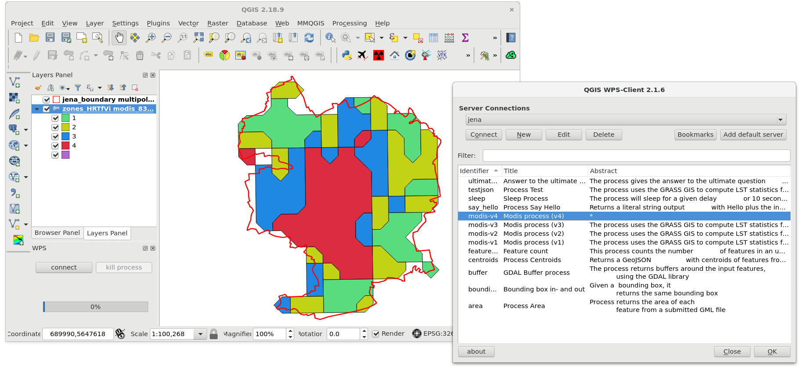

Unit 30 - PyWPS LST region zones¶
A last (fourth) version of the process will return for input region and dates, LST zones in vector format (GML), see line 17. Zones are defined on line 83 by r.recode. Raster classes are convert to vector by r.to.vect on line 96. Finally vector classes are exported into GML format on line 102 by v.out.ogr.
1 2 3 4 5 6 7 8 9 10 11 12 13 14 15 16 17 18 19 20 21 22 23 24 25 26 27 28 29 30 31 32 33 34 35 36 37 38 39 40 41 42 43 44 45 46 47 48 49 50 51 52 53 54 55 56 57 58 59 60 61 62 63 64 65 66 67 68 69 70 71 72 73 74 75 76 77 78 79 80 81 82 83 84 85 86 87 88 89 90 91 92 93 94 95 96 97 98 99 100 101 102 103 104 105 106 107 108 109 | import os
from pywps import Process, LiteralInput, LiteralOutput, ComplexInput, Format, ComplexOutput
__author__ = 'Martin Landa'
class ModisV4(Process):
def __init__(self):
inputs = [ComplexInput('region', 'Input vector region',
supported_formats=[
Format('text/xml'), # required by QGIS 2 WPS client
Format('application/xml')]),
LiteralInput('start', 'Start date (eg. 2019-03-01)',
data_type='string'),
LiteralInput('end', 'End date (eg. 2019-04-01)',
data_type='string')]
outputs = [ComplexOutput('zones', 'Output LST zones',
supported_formats=[Format('application/gml+xml')])
]
super(ModisV4, self).__init__(
self._handler,
identifier='modis-v4',
version='0.4',
title="Modis process (v4)",
abstract='The process uses the GRASS GIS to compute LST ' \
'statistics for given period in 2019 for Germany',
profile='',
inputs=inputs,
outputs=outputs,
store_supported=True,
status_supported=True,
grass_location="/home/user/grassdata/germany-modis"
)
def check_date(self, date_str):
from datetime import datetime
d = datetime.strptime(date_str, '%Y-%m-%d')
if d.year != 2019:
raise Exception("Only year 2019 allowed")
def _handler(self, request, response):
from subprocess import PIPE
import grass.script as gs
from grass.pygrass.modules import Module
from grass.exceptions import CalledModuleError
start = request.inputs['start'][0].data
end = request.inputs['end'][0].data
self.check_date(start)
self.check_date(end)
output = 'modis_{}'.format(os.getpid())
# be silent
os.environ['GRASS_VERBOSE'] = '0'
Module('v.import',
input=request.inputs['region'][0].file,
output='poly')
Module('g.region', vector='poly', align='c_001')
Module('r.mask', vector='poly')
try:
Module('t.rast.series',
input='modis_c@PERMANENT',
output=output,
method='average',
where="start_time > '{start}' and start_time < '{end}'".format(
start=start, end=end
))
except CalledModuleError:
raise Exception('Unable to compute statistics')
ret = Module('r.univar',
flags='ge',
map=output,
stdout_=PIPE
)
stats = gs.parse_key_val(ret.outputs.stdout)
Module("r.recode",
input = output,
output = output + '_zones',
rules = "-",
stdin_ = """{min}:{first}:1
{first}:{median}:2
{median}:{third}:3
{third}:{max}:4""".format(
min=stats['min'], first=stats['first_quartile'],
median=stats['median'], third=stats['third_quartile'],
max=stats['max'])
)
Module("r.to.vect",
flags = 'sv',
input = output + '_zones',
output = output + '_zones',
type = "area")
Module('v.out.ogr',
input=output + '_zones',
output='zones.gml',
format='GML', overwrite=True)
response.outputs['zones'].file = 'zones.gml'
return response
|
Sample process to download: modis_v4.py
Do not forget to import process as done in Unit 27 and restart demo PyWPS server.
Execute process:
Todo
PyWPS fails with segmentation fault
Compare with (output return as reference):

Example of WPS process consumption in QGIS using WPS client plugin.¶
It is the end (of the workshop), enjoy GRASS GIS, PyWPS (and your real life)! :-)